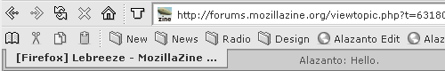
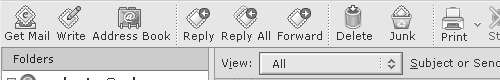

Download LeBreeze
Disclaimer: The version of LeBreeze available for download here is not an official release offered by Kevin Davis, the original author of the theme. It is an unofficial version being maintained by myself, with Kevin's permission. The official version of the theme can be found at the official LeBreeze website.
LeBreeze for Firefox 0.9 (Unofficial Release)
A grey, minimal theme based upon flyson's Breeze.

Download theme (Last updated 18 June 2004)
LeBreeze for Thunderbird 0.6+ (Unofficial Release)
Not compatible with Thunderbird 0.7

Download theme (Last updated 20 May 2004)
Other Downloads
LeBreeze source graphics
A zipfile containing all original graphics used in LeBreeze, in PSD (Photoshop) format.
LeBreeze 3DCC color scheme
A matching color scheme for LeBreeze. Requires 3D Color Changer.